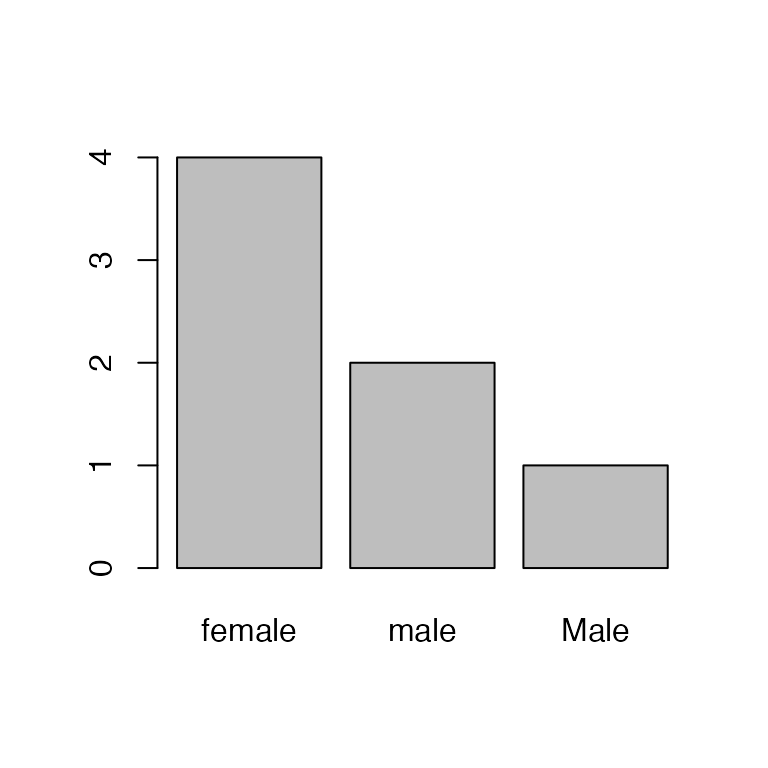

lab06_blocking.RmdRemember from lecture that randomized complete block design (RCBD) is like one-way ANOVA except experimental units are organized into blocks to account for extraneous source of variation.
Blocks can be regions, time periods, individual subjects, etc. but blocking must occur during the design phase of the study.
We can write the additive RCBD model as:
\[\large y_{ij} = \mu + \alpha_i + \beta_j + \epsilon_{ij}\]
To “fit” the RCBD model by hand, we’ll use the gypsy moth data we saw in lecture:
| Treatment | Region | caterpillar |
|---|---|---|
| Control | 1 | 25 |
| Control | 2 | 10 |
| Control | 3 | 15 |
| Control | 4 | 32 |
| Bt | 1 | 16 |
| Bt | 2 | 3 |
So far, we have generally treated data as either numeric/integer if the vector consisted of numbers, or character if the data consisted of non-numeric information. To perform the RCBD analysis, we need to learn about another type of object in R - factors.
Factors look like character strings but they behave quite differently, and understanding the way that R handles factors is key to working this type of data. The key difference between factors and character strings is that factors are used to represent categorical data with a fixed number of possible values, called levels1.
Factors can be created using the factor() function:
Because we didn’t explicitly tell R the levels of this factor, it will assume the levels are adult and juvenile. Furthermore, by default R assigns levels in alphabetical order, so adult will be the first level and juvenile will be the second level:
levels(age)
#> [1] "adult" "juvenile"Sometimes alphabetical order might not make sense:
What order will R assign to the treatment levels?
If you want to order the factor in a different way, you can use the optional levels argument:
treatment <- factor(c("low", "medium", "high"), levels = c("low", "medium", "high"))
levels(treatment)
#> [1] "low" "medium" "high"Sometimes you may also need to remove factor levels. For example, let’s see what happens if we have a type in one of the factors:

Oops, one of the field techs accidentally capitalized “Male”. Let’s change that to lowercase:
Hmm, there’s still a bar for Male. We can see what’s happening here by looking at the levels:
levels(sex)
#> [1] "female" "male" "Male"Removing/editing the factors doesn’t change the levels! So R still thinks there are three levels, just zero Male entries. To remove that mis-specified level, we need to drop it:
sex <- droplevels(sex)
barplot(table(sex))That’s better.
The bottom line is be careful when working with factors, since their behavior is not always intuitive. There are more great online resources for working with factors in R, including this tutorial and even a package (forcats) that tries to make it a bit easier.
Before we analyze the moth data, we need to tell R to treat the Treatment and Plot variables as factors:
str(mothData)
#> 'data.frame': 12 obs. of 3 variables:
#> $ Treatment : chr "Control" "Control" "Control" "Control" ...
#> $ Region : int 1 2 3 4 1 2 3 4 1 2 ...
#> $ caterpillar: num 25 10 15 32 16 3 10 18 14 2 ...Right now, they are character and integer objects, respectively.
mothData$Treatment <- factor(mothData$Treatment, levels = c("Control", "Bt", "Dimilin"))
levels(mothData$Treatment)
#> [1] "Control" "Bt" "Dimilin"
mothData$Region <- factor(mothData$Region)
levels(mothData$Region)
#> [1] "1" "2" "3" "4"Note that we were explicit about the order of levels for Treatment so that controls came first.
Next, compute the means:
library(dplyr)
# Grand mean
(grand.mean <- mean(mothData$caterpillar))
#> [1] 14.41667
# Treatment means
(treatment.means <- group_by(mothData, Treatment) %>% summarise(mu = mean(caterpillar)))
#> # A tibble: 3 x 2
#> Treatment mu
#> <fct> <dbl>
#> 1 Control 20.5
#> 2 Bt 11.8
#> 3 Dimilin 11
# Block means
(block.means <- group_by(mothData, Region) %>% summarise(mu = mean(caterpillar)))
#> # A tibble: 4 x 2
#> Region mu
#> <fct> <dbl>
#> 1 1 18.3
#> 2 2 5
#> 3 3 13.7
#> 4 4 20.7Remember the formula for the treatment sums of squares
\[\Large b \times \sum_{i=1}^a (\bar{y}_i - \bar{y}_.)^2\]
The formula for the block sums of squares
\[\Large a \times \sum_{j=1}^b (\bar{y}_j - \bar{y}_.)^2\]
\[\Large \sum_{i=1}^a \sum_{j=1}^b (y_{ij} - \bar{y}_i - \bar{y}_j + \bar{y}_.)^2\]
treatment.means.long <- rep(treatment.means$mu, each = b)
block.means.long <- rep(block.means$mu, times = a)
(SS.within <- sum((mothData$caterpillar - treatment.means.long - block.means.long + grand.mean)^2))
#> [1] 114.8333NOTE: For the above code to work, treatment.means and block.means must be in the same order as in the original data.
Now we’re ready to create the ANOVA table. Start with what we’ve calculated so far:
df.treat <- a - 1
df.block <- b - 1
df.within <- df.treat*df.block
ANOVAtable <- data.frame(df = c(df.treat, df.block, df.within),
SS = c(SS.treat, SS.block, SS.within))
rownames(ANOVAtable) <- c("Treatment", "Block", "Within")
ANOVAtable
#> df SS
#> Treatment 2 223.1667
#> Block 3 430.9167
#> Within 6 114.8333Next, add the mean squares:
MSE <- ANOVAtable$SS / ANOVAtable$df
ANOVAtable$MSE <- MSE ## makes a new column!Now, the F-values (with NA for error/within/residual row):
F.stat <- c(MSE[1]/MSE[3], MSE[2]/MSE[3], NA)
ANOVAtable$F.stat <- F.statFinally, the p-values
Quick reminder about calculating p-values
qf(0.95, 2, 6) # 95% of the distribution is below this value of F
#> [1] 5.143253
1-pf(F[1], 2, 6) # Proportion of the distribution beyond this F value
#> [1] 1Be sure you understand what each of these functions is doing!
And we’ll display the table using kable(), with a few options to make it look a little nicer:
options(knitr.kable.NA = "") # leave NA cells empty
knitr::kable(ANOVAtable, digits = 2, align = "c",
col.names = c("df", "SS", "MSE", "F", "p-value"),
caption = "RCBD ANOVA table calculated by hand")| df | SS | MSE | F | p-value | |
|---|---|---|---|---|---|
| Treatment | 2 | 223.17 | 111.58 | 5.83 | 0.04 |
| Block | 3 | 430.92 | 143.64 | 7.51 | 0.02 |
| Within | 6 | 114.83 | 19.14 |
aov()
aov1 <- aov(caterpillar ~ Treatment + Region, mothData)
summary(aov1)
#> Df Sum Sq Mean Sq F value Pr(>F)
#> Treatment 2 223.2 111.58 5.830 0.0392 *
#> Region 3 430.9 143.64 7.505 0.0187 *
#> Residuals 6 114.8 19.14
#> ---
#> Signif. codes: 0 '***' 0.001 '**' 0.01 '*' 0.05 '.' 0.1 ' ' 1Same as what we got by hand! Look what happens if we ignore the blocking variable:
aov2 <- aov(caterpillar ~ Treatment, mothData)
summary(aov2)
#> Df Sum Sq Mean Sq F value Pr(>F)
#> Treatment 2 223.2 111.58 1.84 0.214
#> Residuals 9 545.8 60.64Why is the effect of pesticide no longer significant?
aov3 <- aov(caterpillar ~ Treatment + Error(Region), mothData)
summary(aov3)
#>
#> Error: Region
#> Df Sum Sq Mean Sq F value Pr(>F)
#> Residuals 3 430.9 143.6
#>
#> Error: Within
#> Df Sum Sq Mean Sq F value Pr(>F)
#> Treatment 2 223.2 111.58 5.83 0.0392 *
#> Residuals 6 114.8 19.14
#> ---
#> Signif. codes: 0 '***' 0.001 '**' 0.01 '*' 0.05 '.' 0.1 ' ' 1The values of the ANOVA table are the same as before, and there is no reason to use random effects here if interest only lies in testing the null hypothesis concerning pesticides.
Later, we will see cases where it is important to use random and fixed effects.
Some time ago, plantations of Pinus caribaea were established at four locations on Puerto Rico. As part of a spacing study, four spacings were used at each location to determine the effect of four specific spacing intervals on tree height. Twenty years after the plantations were established, measurements were made in the study plots as follows:
| Location | Spacing (ft) | Height (ft) |
|---|---|---|
| Caracoles | 5 | 72 |
| 7 | 80 | |
| 10 | 85 | |
| 14 | 91 | |
| Utuado | 5 | 75 |
| 7 | 90 | |
| 10 | 94 | |
| 14 | 112 | |
| Guzman | 5 | 88 |
| 7 | 95 | |
| 10 | 94 | |
| 14 | 91 | |
| Lares | 5 | 79 |
| 7 | 94 | |
| 10 | 104 | |
| 14 | 106 |
You can access these data using:
Create an R script or R Markdown file to the address the following:
What is the primary null hypothesis of interest? State it, and the associated alternative hypothesis, as comments in the file
Test for effects of location and spacing on plant height using the aov() function. NOTE: spacing must be treated as a factor, not as a numeric vector
Perform a Tukey test to determine which spacings differ
Note well! Please complete this exercise, because doing so will help you on subsequent assignments and exams. You do not need to turn it in!
Under the hood, R actually treats factors as integers - 1, 2, 3… - with character labels for each level↩︎